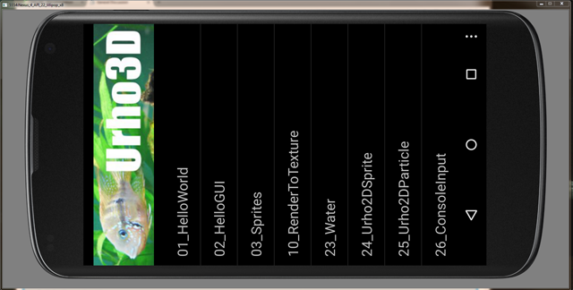
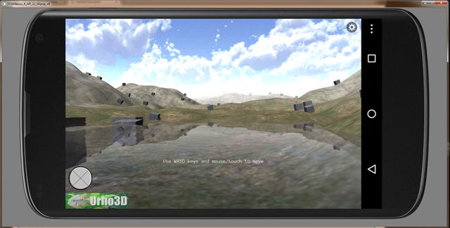

This is my first post. After spending a few days on learning Urho3D and its build process, Android Studio SDK, Android NDK, and other tools required to build and deploy to Android platform (emulators and devices) in Windows, I found all of it a bit over whelming and thought I should share my easy steps taken to do this and hope that this information can help others. Disclaimer, I am new to Urho3D and Android (mobile development in general) and Android Studio SDK/NDK, so I wanted to use the least number of tools and find a way to wrap all of this into something really easy. If there is a faster/easier way to do this, I’d like to learn it. But here we go.
- goal - to deploy to Android Studio in Windows by using least number of tools, based on reference: urho3d.github.io/documentation/1.4/_building (can’t post the actual URL in my very first post).
[ul]
a) Tools required (other than Urho3D source tree): Android Studio SDK, NDK and these require - Java JDK, Gradle, Ant., and CMake required by Urho3D.
b) Tools avoided: Eclipse and other tools listed in the reference.
Why avoid Eclipse? I decided to avoid using Eclipse after reading the below quote on the Android Studio site:
[quote]Note: If you have been using Eclipse with ADT, be aware that Android Studio is now the official IDE for Android, so you should migrate to Android Studio to receive all the latest IDE updates. For help moving projects, see Migrating to Android Studio.[/quote]
And since I’ve never used Eclipse, I didn’t want to bother with it.
[/ul] - install-
[ul]
[li] Java JDK[/li]
[li] CMake[/li]
[li] Gradle[/li]
[li] Ant (Apache-Ant)[/li]
[li] Android Studio SDK[/li]
[li] Android NDK[/li][/ul]
Not necessarily in that order, install Java JDK before Android SDK, and be sure to have added bin and tools path in your Windows environment.
edit: removed unnecessary components
- cmake android build - Open a cmd terminal in your folder and type:
cmake_android builds\android-samples -DURHO3D_SAMPLES=1The URHO3D_SAMPLES option is to build executable sample code (bypassing urho3dplayer) that comes with Urho3D (missing in the build reference). Note: this builds armeabi-v7a by default as indicated in the build reference. For other devices, use, e.g. -DANDROID_ABI=x86
- make - make android target build. Continuing in the cmd terminal from above
cd builds\android-samples
android list target‘android list target’ command is to see and choose the build target you want to build. Index id of 5 gives me API-16 for armeabi-v7a and x86. Let’s choose that as the target (-t) for this example.
android update -p . -t 5
make -j8Done building for android platform build.
-
import - to Android Studio:
[ul]
a) Open Android Studio
b) Create a new project by: File -> New -> Import Project…
c) navigate to your newly build android folder. This example assumes it’s \builds\android-samples\ folder.
d) choose the destination project folder location, e.g. F:\Android\projects\Urho3D-Android-samples\
e) OK - done
[/ul] -
deploy to an emulator or device. Do this by clicking on the Play button.
That’s it!
Imported folder location
Following the example, under F:\Android\projects\Urho3D-Android-samples\ (let’s call this ),
the executables imported in 5) are found in:
\app\src\main\jniLibs, specifically in the $(TARGET_ARCH_ABI) folder, for this example you should see ‘armeabi-v7a’ folder.
You should see number of .so files (sample code executables) along with libUrho3DPlayer.so file.
When you deploy to a device, you should see an item selection app which lists all these .so apps (see image 1).
note Most of these .so files should be deleted and only keep the ones that you want to test, as you probably don’t have the memory to upload all these apps to your emulation device.
Continuing development in imported
If you want to continue developing under Android Studio, you can and not have to rebuild Urho3D.
This continuation development is done in \app\src\main folder.
This folder should contain similar files when you import a sample from NDK\samples to Android Studio.
Windows development
Just to note, I found using x86 emulation devices on Windows faster (as expected) than emulating on an Arm device. For emulation purposes, I choose x86 but I also deploy to my android phone and tablet for additional testing.
I hope these easy steps can help. Good luck!
----EDIT: added screenies ----
Image 1:

Image 2:
